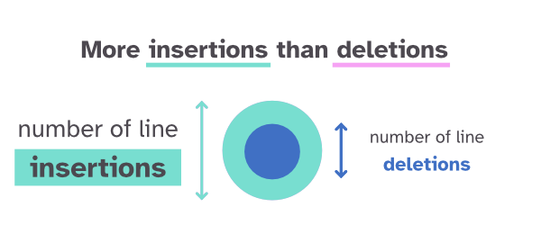
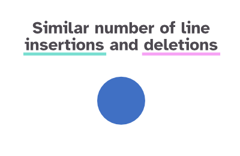
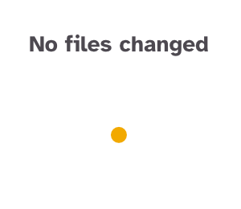
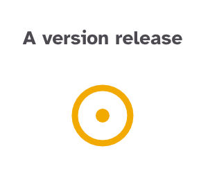
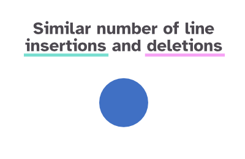
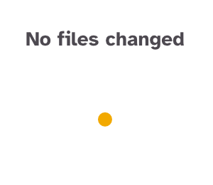
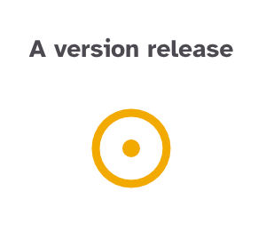
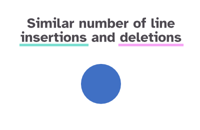
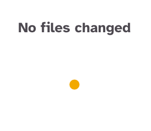
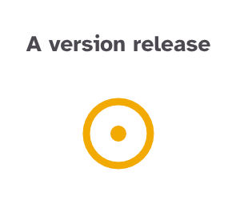

All commits of
mozilla/pdf.js
The mozilla/pdf.js repository has seen many improvements from its various contributors since the first commit. The visualization below shows all commits that have been made since then.
Each commit is represented as a small circle. They're grouped together by (commit) month, giving an overview of which periods had relatively few updates while other time periods saw a lot of activity.
HOW TO READ THIS VISUAL

 








◑ size doesn't scale completely linearly with number of lines ◐
×
author
committed on
February 7, 2024
release
v4.7.09
changes made
3 files changed
468 insertions (+) / 263 deletions (-)
commit hash
Visualization Designed & Created by Nadieh Bremer | Visual Cinnamon